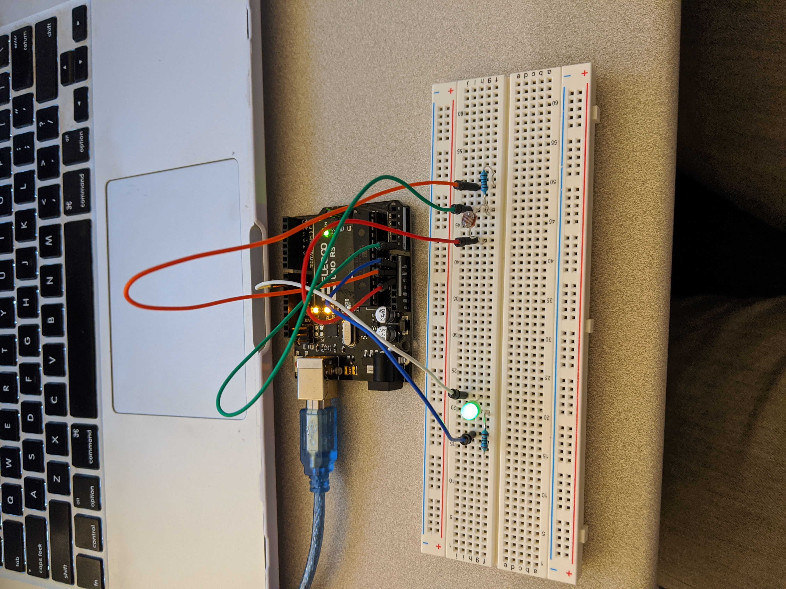
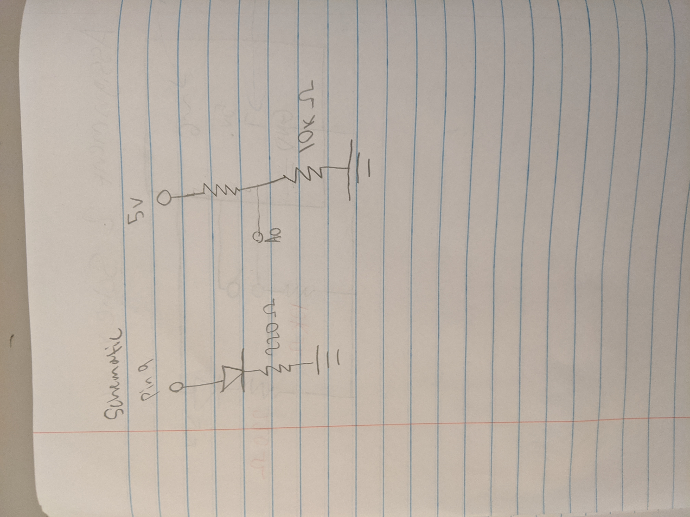
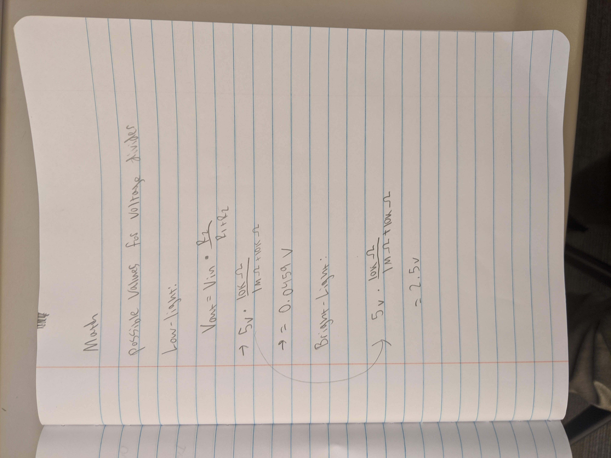
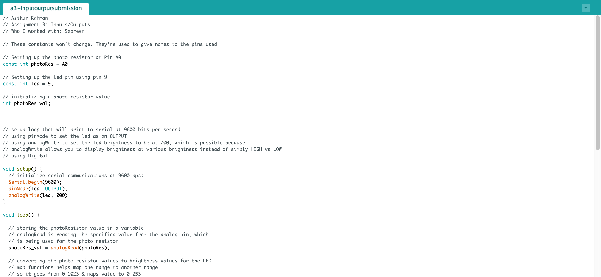
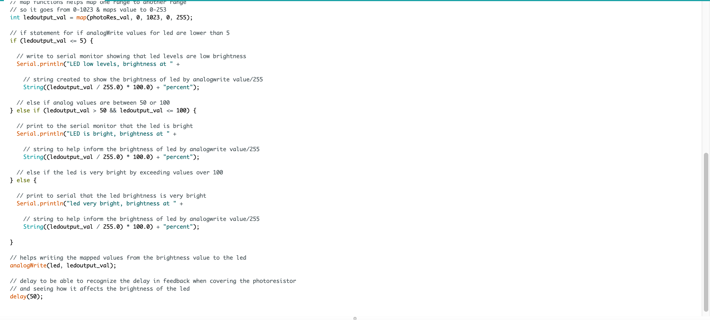
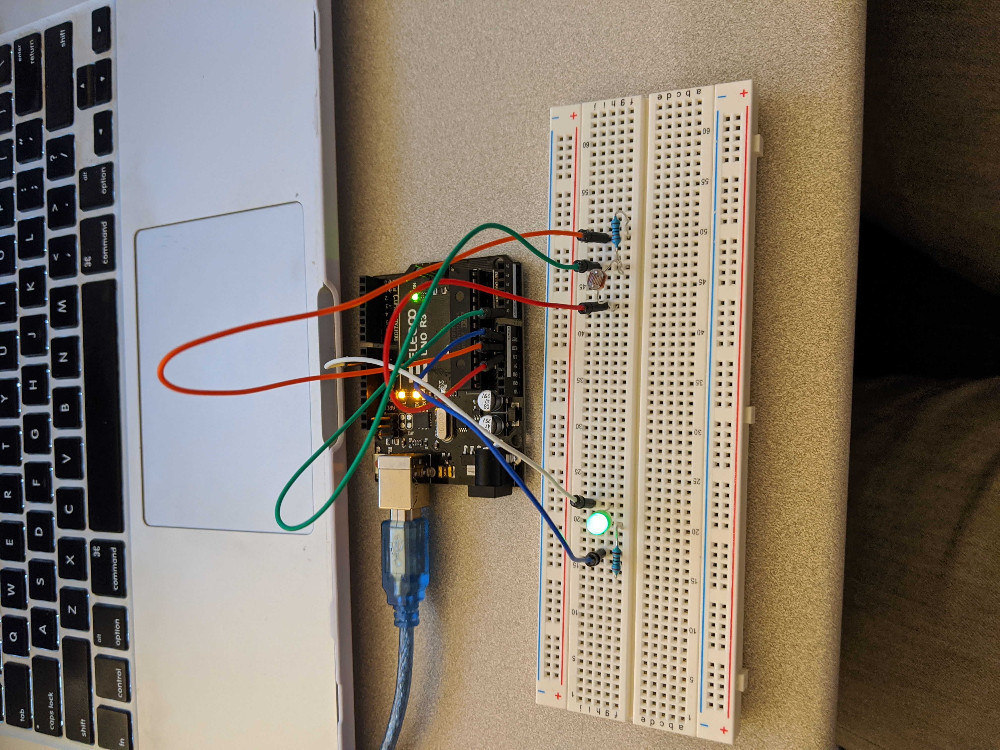
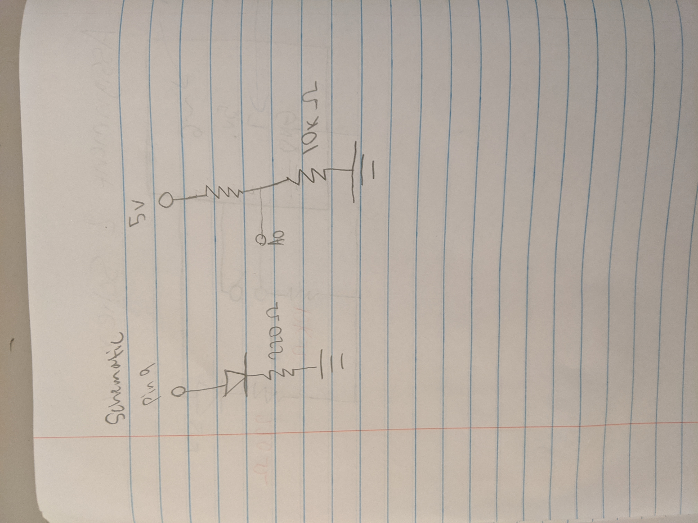
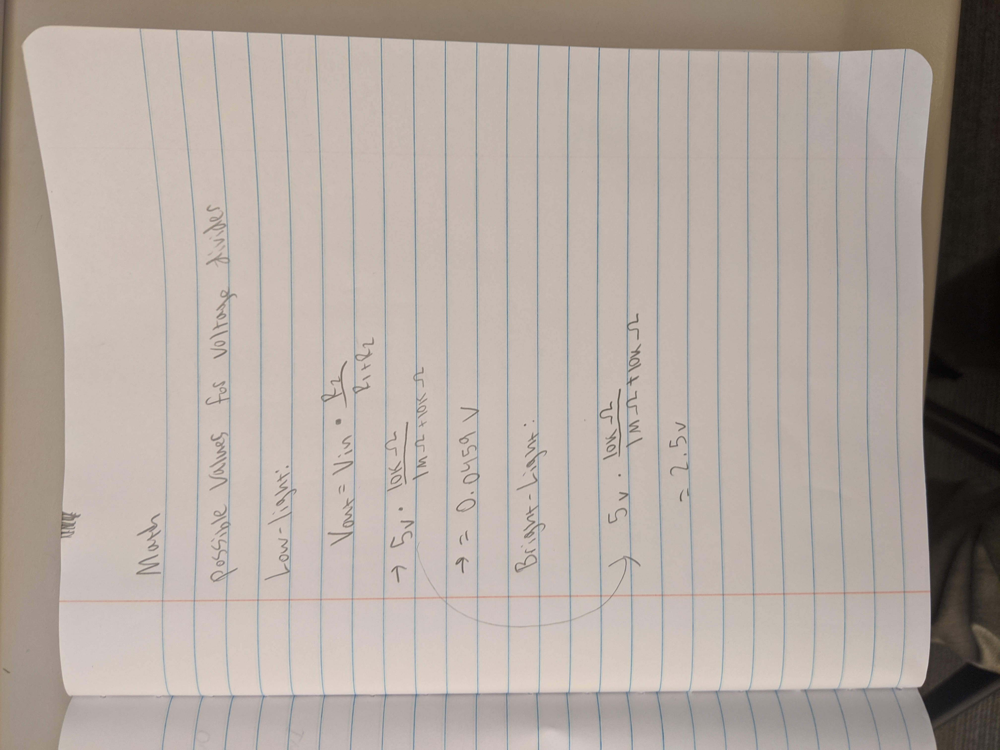
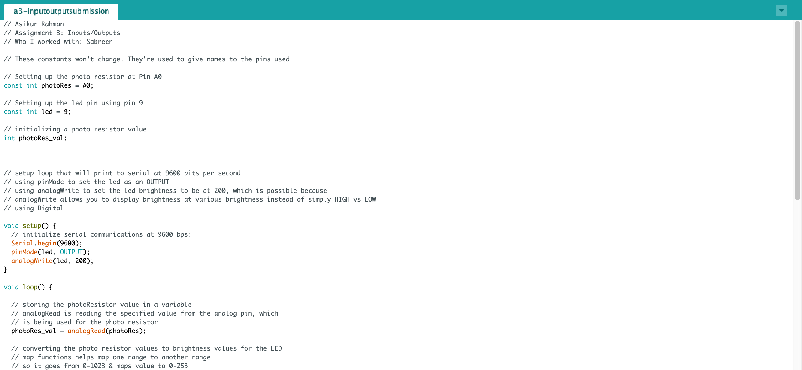
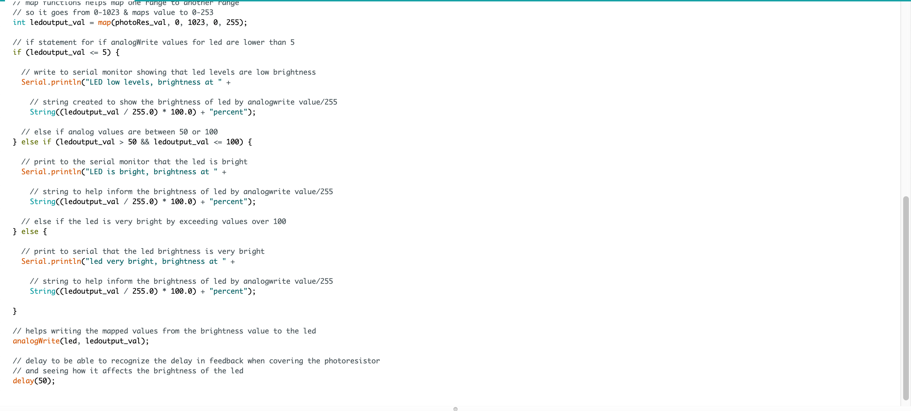

Assignment 3: InputOutput!
Instructions: You will create a schematic, circuit, and code that uses a sensor (e.g. either the photoresistor or the thermistor) in a voltage divider to change the state of an LED.
Circuit Demo: This is a gif showing the circuit operations when assembled
This is a gif showing the circuit operations when assembled
 Circuit Diagram:

Schematic:

This is a schematic of my circuit.
Calculations:
I used Ohm's law to figure out the correct resistor for the red LED.
V = IR --> R=V/I ---> R =~107Ohms
I chose 220 Ohm resistor since that is the closest to 106. For the photoresistor
I chose 10k.

Code Snippet:


I used analogRead() to get the photoresistors values. I used analogWrite() to
initialize the led brightness. The map function was used to convert the photoresistors
values to the LED brightness values from 0-255. I also used if statements to
print to the serial monitor.
Circuit Diagram:

Schematic:

This is a schematic of my circuit.
Calculations:
I used Ohm's law to figure out the correct resistor for the red LED.
V = IR --> R=V/I ---> R =~107Ohms
I chose 220 Ohm resistor since that is the closest to 106. For the photoresistor
I chose 10k.

Code Snippet:


I used analogRead() to get the photoresistors values. I used analogWrite() to
initialize the led brightness. The map function was used to convert the photoresistors
values to the LED brightness values from 0-255. I also used if statements to
print to the serial monitor.